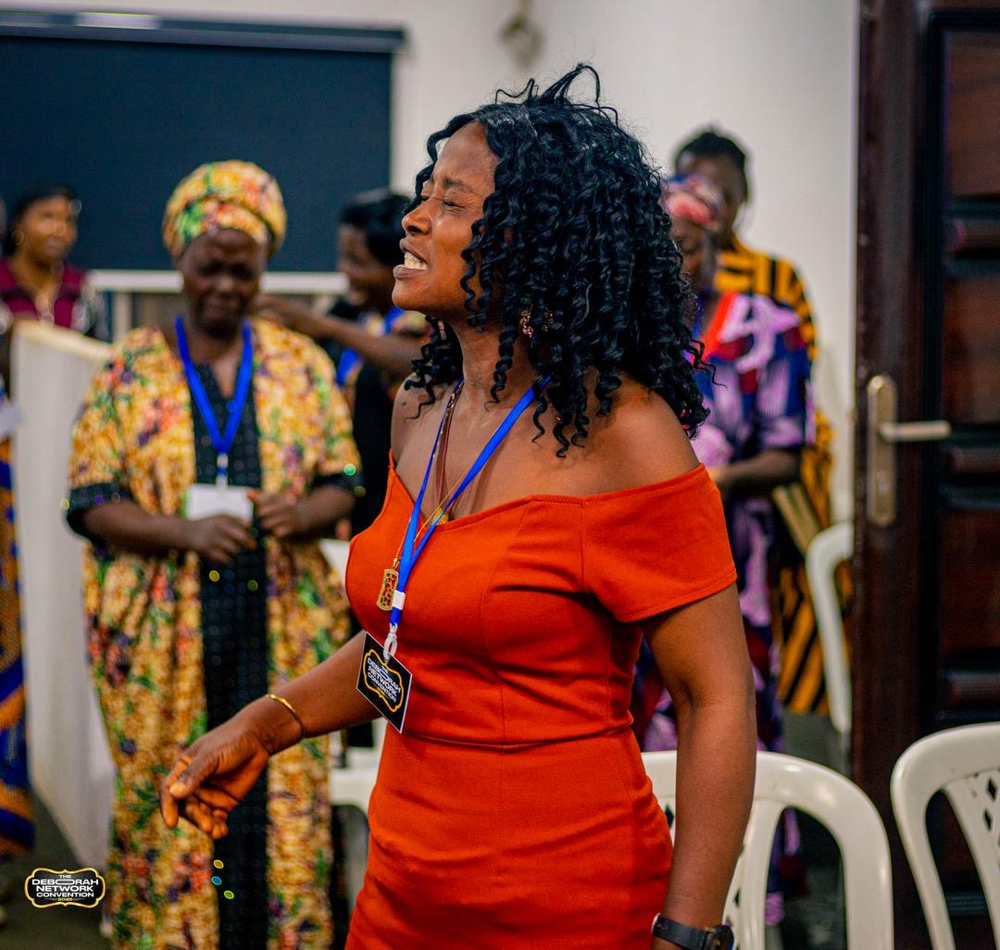
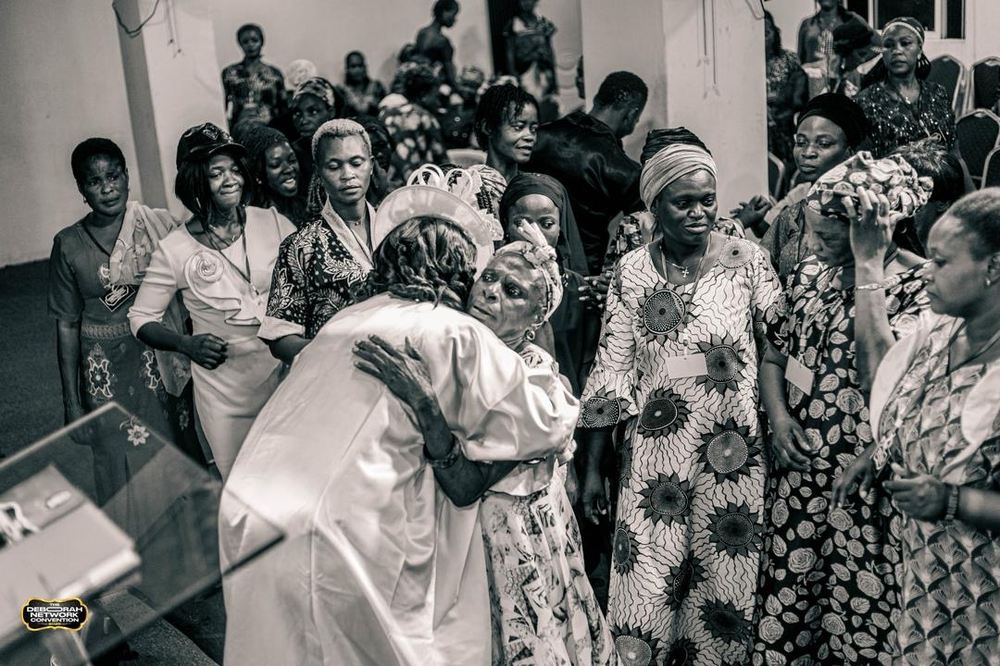
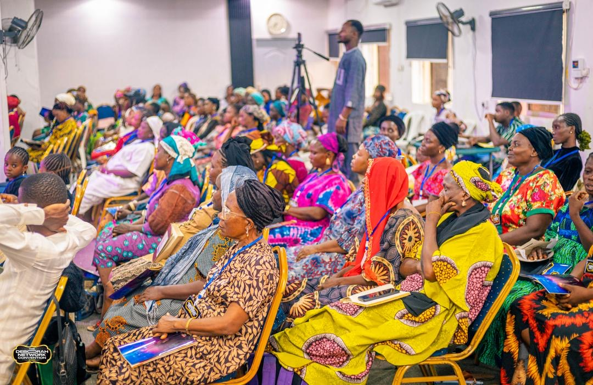
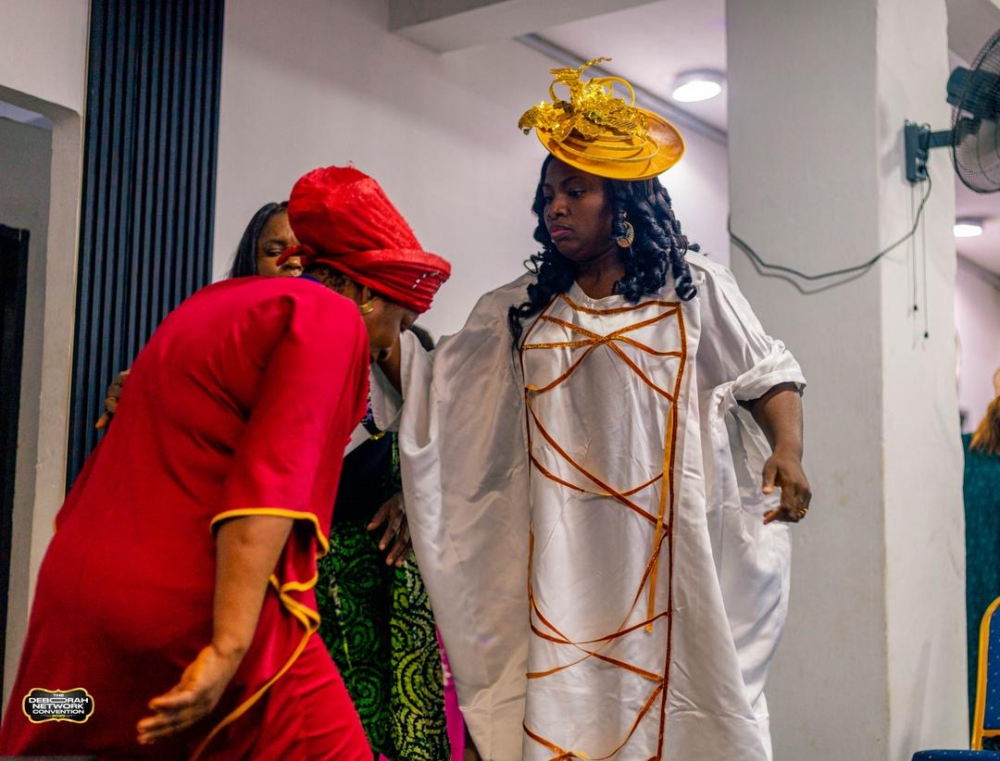
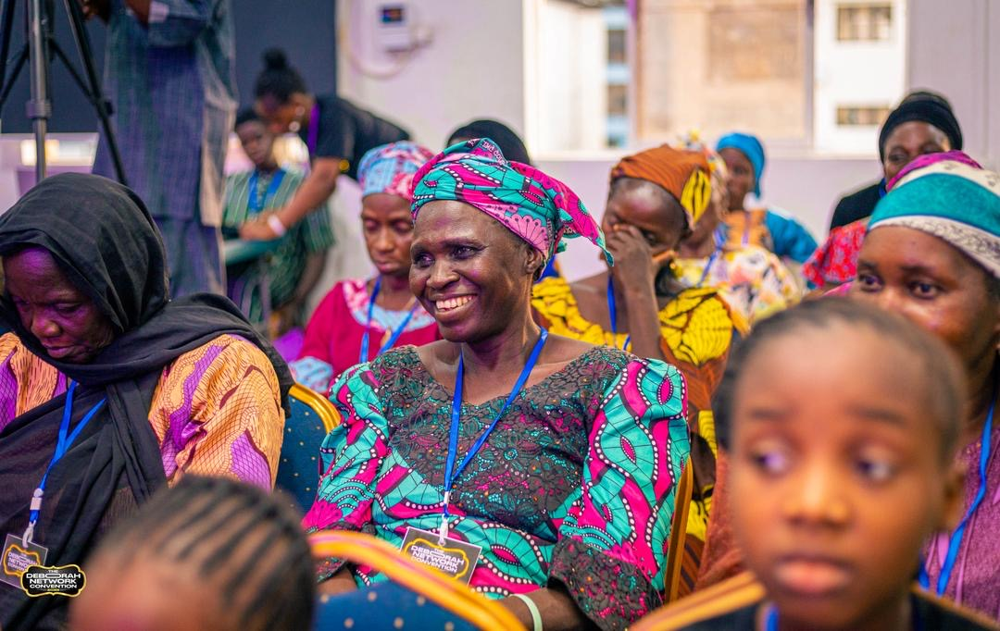

Raising women who influence nations.

The Deborah Network (TDN) is a global community of women from all walks of life, taking a stand for the Kingdom of God on earth — for this generation and the next.
We are committed to uplifting and transforming the lives of women of all ages through the Word of God, godly counsel, humanitarianism, and so much more. Instructed by God and inspired by the biblical Deborah — a compassionate mother full of wisdom, a worshipper, a warrior, and an intercessor with godly counsel and courage — our network is a house of refuge for the battered and injured, and an umbrella for women of all ages, advocating their spiritual, emotional, and social well-being.
To build a global community where women are networked and empowered in all units of life, equipped with the wisdom of the Word of God and resources, to fulfil their divine purposes.— The Vision Statement
The Deborah Network is a global family committed to:
Helping women of all ages grow in faith and build a personal relationship with God.
Supporting women in need, including abused and suppressed wives.
Assisting widows and vulnerable women with financial and emotional support.
Encouraging healthy, God-centred marriages through counselling and mentorship.
Guiding young people toward choosing godly spouses.
Promoting responsible parenting and raising God-fearing children.
Providing career guidance and skill development for wise professional choices.
Advocating for women's rights and being a voice against injustice and oppression.

In the book of Judges (chapters 4–5), Deborah arises as a prophetess, a judge, and a leader at a time when Israel needed deliverance.
She was a wise counsellor who sat to judge her people, a worshipper whose song of victory still echoes through Scripture, and a courageous mother in Israel who summoned Barak and led a nation into freedom. Her life is the blueprint for the women we are raising — women of wisdom, worship, courage, and influence.
Deborah led a nation with conviction, guiding others toward freedom and purpose.
She sat to judge Israel, dispensing godly counsel rooted in the fear of the Lord.
She arose when others hesitated, facing battle with unshakable boldness.
Her trust in God's word turned the tide and brought deliverance to her people.
A mother in Israel whose legacy still raises daughters of destiny today.
Deborah is not a theory — she is a living movement of women on their faces in prayer and on their feet in service.





True empowerment begins with a deep relationship with Jesus, our King and Source.
We extend love, care, and support to women in need.
We uphold honesty, righteousness, and consistency; we do not give up on God, family, or ourselves, nor give in to the wiles of the devil.
We equip women with the knowledge and skills to thrive in life.
We promote strong, God-centred marriages and homes.
We stand against abuse, oppression, and injustice toward women.
We strive to give our very best service to God, our families, the Church, and society.
Everything we do flows from a living relationship with God.
Every woman is created for a divine assignment worth fulfilling.
We raise women to lead boldly in every sphere of life.
We exist to transform homes, communities, and nations.
Our work is anchored in the timeless truths of God's Word — the foundation upon which every life and leader is built.
From Glory to Glory, until we see The King.— The Deborah Network
Online · Here to help